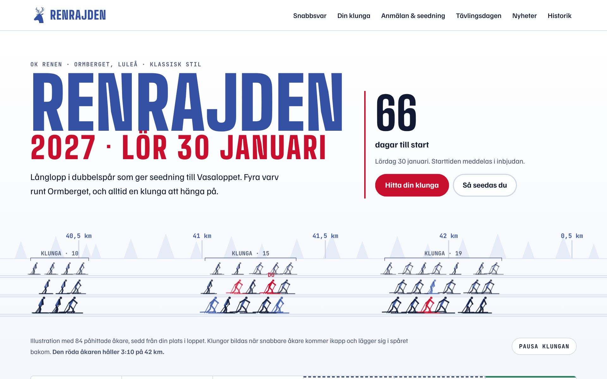
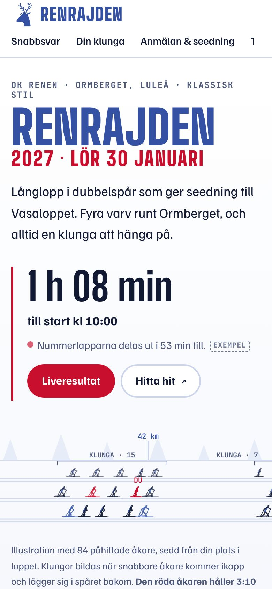
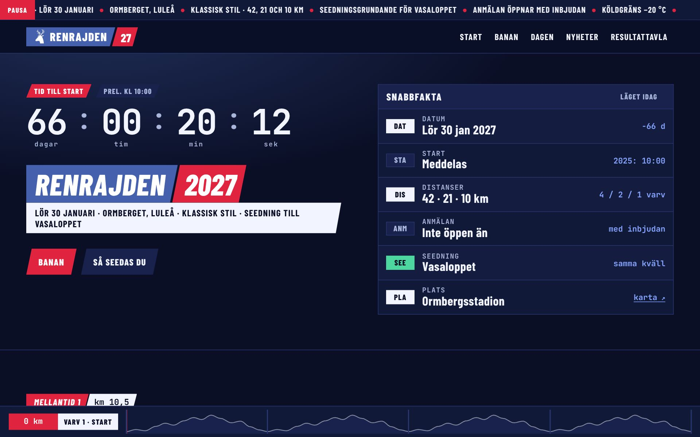
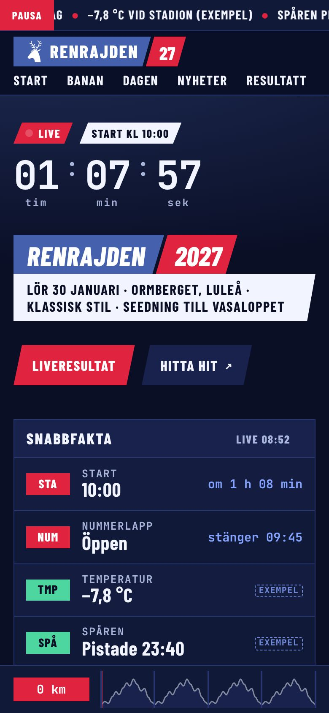
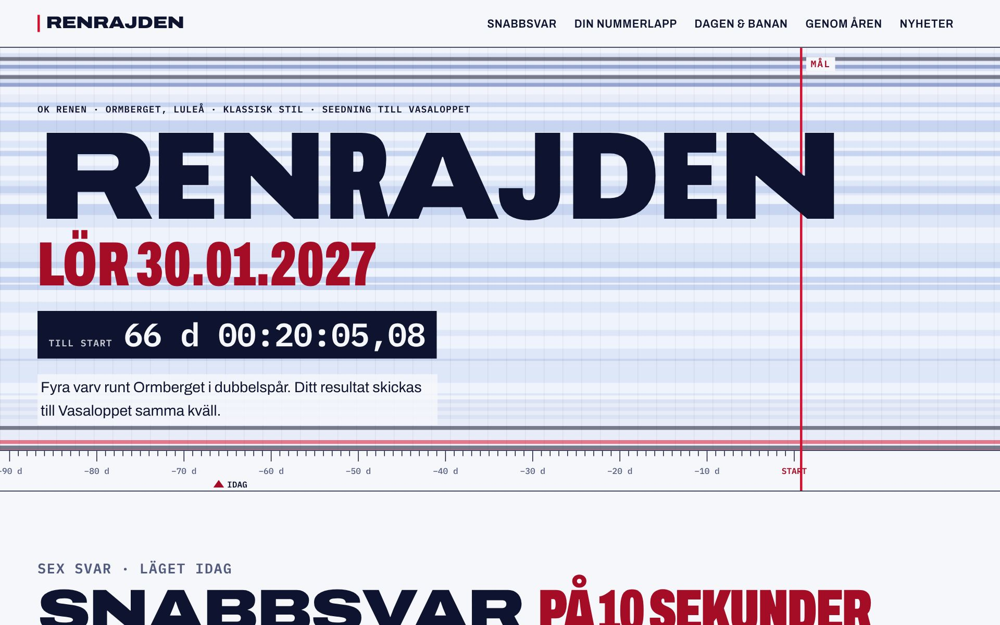
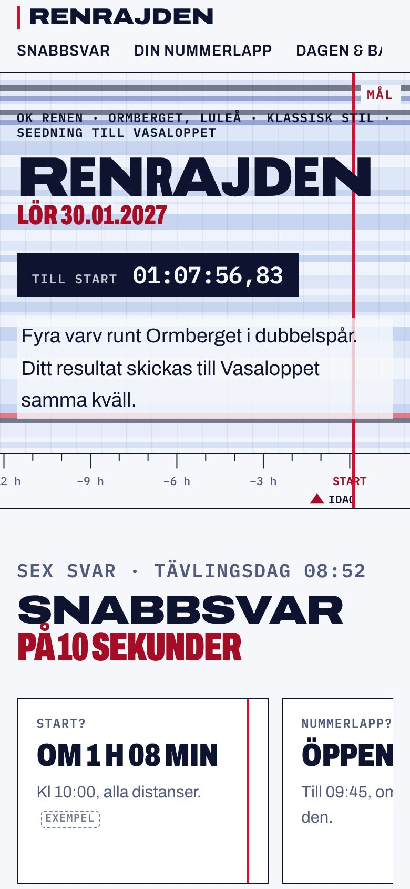

<title>Renrajden UX-översyn</title>
<meta name="claude:viewport-fit-sides" content="cover">
<link rel="preconnect" href="https://fonts.googleapis.com">
<link rel="preconnect" href="https://fonts.gstatic.com" crossorigin>
<link rel="stylesheet" href="https://fonts.googleapis.com/css2?family=Big+Shoulders+Display:wght@800;900&family=Familjen+Grotesk:wght@400;500;700&family=JetBrains+Mono:wght@500;700&display=swap">
<style>
/* Layout: en rapport i klubbens färger. Smal läsbredd för text, bredare rutnät för koncepten och jämförelsen.
   Signaturen är "sidan som en bana": var svaren ligger på mobil, ritat som en sträcka i skärmhöjder. */
:root {
  --bg: #F4F6FB; --surface: #FFFFFF; --ice: #E5EBF7; --line: #CAD3EA;
  --ink: #121933; --muted: #4C5678; --blue: #3451A3; --vest: #4561AE; --red: #C8102E; --red-ink: #A50D26; --ok: #1C7A4B; --rec: #3451A3;
  --f-display: "Big Shoulders Display", "Arial Narrow", sans-serif;
  --f-body: "Familjen Grotesk", system-ui, -apple-system, "Segoe UI", sans-serif;
  --f-mono: "JetBrains Mono", ui-monospace, Menlo, monospace;
  color-scheme: light;
}
@media (prefers-color-scheme: dark) {
  :root:not([data-theme="light"]) {
    --bg: #0B1029; --surface: #121A3B; --ice: #19234D; --line: #2B3769;
    --ink: #E8EDFB; --muted: #A6B1D5; --blue: #9DB3F7; --vest: #7089D9; --red: #E3314D; --red-ink: #FF8396; --ok: #5FD39A; --rec: #24397F;
    color-scheme: dark;
  }
}
:root[data-theme="dark"] {
  --bg: #0B1029; --surface: #121A3B; --ice: #19234D; --line: #2B3769;
  --ink: #E8EDFB; --muted: #A6B1D5; --blue: #9DB3F7; --vest: #7089D9; --red: #E3314D; --red-ink: #FF8396; --ok: #5FD39A; --rec: #24397F;
  color-scheme: dark;
}
* { box-sizing: border-box; }
body { background: var(--bg); color: var(--ink); font: 400 1.0625rem/1.6 var(--f-body); -webkit-font-smoothing: antialiased;
  padding-left: max(16px, env(safe-area-inset-left, 0px)); padding-right: max(16px, env(safe-area-inset-right, 0px)); }
h1, h2, h3 { margin: 0; line-height: 1.02; text-wrap: balance; }
p { margin: 0; }
a { color: var(--blue); text-underline-offset: .18em; }
:focus-visible { outline: 3px solid var(--blue); outline-offset: 3px; }
.page { max-width: 72rem; margin-inline: auto; padding-block: clamp(2rem, 6vw, 4rem) 4rem; }
.read { max-width: 42rem; }
.label { font: 700 .75rem/1.3 var(--f-mono); letter-spacing: .1em; text-transform: uppercase; color: var(--muted); }
.kicker { font: 700 .8125rem/1.3 var(--f-mono); letter-spacing: .1em; text-transform: uppercase; color: var(--red-ink); }
section { padding-block: clamp(2.5rem, 6vw, 4rem); border-top: 1px solid var(--line); }
section > .head { display: grid; gap: .5rem; margin-bottom: 1.75rem; }
h2 { font: 900 clamp(2.2rem, 5.5vw, 3.4rem)/.92 var(--f-display); text-transform: uppercase; color: var(--blue); }
h3 { font-size: 1.2rem; }

/* Topp */
.intro { display: grid; gap: 1.25rem; padding-bottom: 3rem; }
.intro h1 { font: 900 clamp(3rem, 9vw, 6.2rem)/.98 var(--f-display); text-transform: uppercase; color: var(--blue); }
.intro h1 span { color: var(--red); }
.intro .lede { font-size: 1.25rem; max-width: 40rem; }
.jump { display: flex; flex-wrap: wrap; gap: .5rem; margin-top: .5rem; }
.btn { display: inline-flex; align-items: center; min-height: 48px; padding: .6rem 1.2rem; border-radius: 999px; font-weight: 700; text-decoration: none; border: 2px solid var(--line); color: var(--ink); background: var(--surface); }
.btn.red { background: var(--red); border-color: var(--red); color: #FFFFFF; }
.btn:hover { border-color: var(--blue); }

/* Sidan som en bana */
.course { background: var(--surface); border: 1px solid var(--line); border-radius: 6px; padding: 1.1rem 1.1rem .9rem; overflow-x: auto; }
.course svg { display: block; width: 100%; min-width: 620px; height: auto; }
.legend { display: flex; flex-wrap: wrap; gap: .5rem 1.25rem; margin-top: .75rem; font-size: .9375rem; color: var(--muted); }
.legend span { display: inline-flex; align-items: center; gap: .4rem; }
.legend i { width: 12px; height: 12px; display: inline-block; }

/* Listor */
.cols { display: grid; gap: 2rem; }
@media (min-width: 860px) { .cols { grid-template-columns: 1fr 1fr; gap: 3rem; } }
.ticks { list-style: none; margin: 0; padding: 0; display: grid; gap: .85rem; }
.ticks li { padding-left: 1.6rem; position: relative; }
.ticks li::before { content: ""; position: absolute; left: 0; top: .5em; width: .75rem; height: 3px; background: var(--ok); box-shadow: 0 5px 0 var(--ok); }
.ticks.bad li::before { background: var(--red); box-shadow: 0 5px 0 var(--red); }
.ticks b { display: block; }
.ticks p { color: var(--muted); }
.num { font-variant-numeric: tabular-nums; }

.principles { list-style: none; margin: 0; padding: 0; display: grid; gap: 1px; background: var(--line); border: 1px solid var(--line); border-radius: 6px; overflow: hidden; }
@media (min-width: 860px) { .principles { grid-template-columns: repeat(5, minmax(0, 1fr)); } }
.principles li { background: var(--surface); padding: 1rem 1.1rem 1.2rem; display: grid; gap: .4rem; align-content: start; }
.principles b { font: 800 1.45rem/1 var(--f-display); text-transform: uppercase; }
.principles p { color: var(--muted); font-size: .96875rem; }

/* Koncept */
.concepts { display: grid; gap: 2.5rem; }
.concept { display: grid; gap: 1.5rem; }
@media (min-width: 900px) { .concept { grid-template-columns: minmax(0, 1.35fr) minmax(0, 1fr); gap: 2.5rem; align-items: start; } }
.shots { position: relative; padding-right: 22%; }
.shots img { display: block; width: 100%; height: auto; border-radius: 6px; border: 1px solid var(--line); background: var(--surface); }
.shots .m { position: absolute; right: 0; bottom: -1rem; width: 27%; border-radius: 14px; border: 4px solid var(--ink); box-shadow: 0 10px 30px rgba(0,0,0,.2); }
.concept h3 { font: 900 clamp(2rem, 4.5vw, 2.8rem)/.9 var(--f-display); text-transform: uppercase; color: var(--ink); }
.concept .lead { font-size: 1.125rem; margin-top: .5rem; }
.concept dl { margin: 1rem 0 0; display: grid; gap: .7rem; }
.concept dt { font: 700 .75rem/1.3 var(--f-mono); letter-spacing: .1em; text-transform: uppercase; color: var(--muted); }
.concept dd { margin: .15rem 0 0; }
.concept .go { display: flex; flex-wrap: wrap; gap: .5rem; margin-top: 1.25rem; }

/* Jämförelse */
.table-wrap { overflow-x: auto; border: 1px solid var(--line); border-radius: 6px; background: var(--surface); }
table { width: 100%; border-collapse: collapse; min-width: 640px; }
th, td { text-align: left; vertical-align: top; padding: .75rem .9rem; border-bottom: 1px solid var(--line); font-size: .96875rem; }
thead th { font: 800 1.2rem/1 var(--f-display); text-transform: uppercase; color: var(--blue); }
tbody th { font: 700 .75rem/1.4 var(--f-mono); letter-spacing: .08em; text-transform: uppercase; color: var(--muted); width: 11rem; }
tr:last-child th, tr:last-child td { border-bottom: 0; }
.best { font-weight: 700; }

/* Rekommendation */
.rec { background: var(--rec); color: #FFFFFF; border-radius: 6px; padding: clamp(1.25rem, 4vw, 2rem); display: grid; gap: .75rem; }
.rec h3 { font: 900 clamp(1.8rem, 4vw, 2.6rem)/.95 var(--f-display); text-transform: uppercase; }
.rec p { max-width: 46rem; font-size: 1.0625rem; }
.steps { list-style: none; margin: 2rem 0 0; padding: 0; counter-reset: s; display: grid; gap: 0; }
.steps li { counter-increment: s; display: grid; grid-template-columns: 3rem minmax(0, 1fr); gap: 1rem; padding: 1rem 0; border-bottom: 1px solid var(--line); }
.steps li::before { content: counter(s); font: 900 2.2rem/1 var(--f-display); color: var(--red-ink); }
.steps b { display: block; font-size: 1.0625rem; }
.steps p { color: var(--muted); }
.needs { margin-top: 2rem; display: grid; gap: .5rem; }
.needs ul { margin: 0; padding-left: 1.2rem; display: grid; gap: .35rem; }
.foot { border-top: 1px solid var(--line); padding-top: 1.5rem; color: var(--muted); font-size: .9375rem; display: grid; gap: .5rem; }
code { font-family: var(--f-mono); font-size: .9em; background: var(--ice); padding: .05em .35em; border-radius: 3px; }
</style>

<main class="page">
  <header class="intro">
    <p class="kicker">Renrajden · UX-översyn · november 2026</p>
    <h1>Snabbare svar, <span>mer skidåkning</span></h1>
    <p class="lede">En genomgång av renrajden.web.app och tre klickbara prototyper. Alla tre svarar på det viktigaste direkt, byter innehåll efter var vi är i säsongen och har en detalj som bara ett längdskidlopp kan ha.</p>
    <div class="jump">
      <a class="btn red" href="klungan.html">Klungan</a>
      <a class="btn" href="mellantid.html">Mellantid</a>
      <a class="btn" href="malfoto.html">Målfoto</a>
    </div>
    <p class="label">Tips: välj ”Tävlingsdag” i prototypernas övre list för att se hur sidan ser ut kl 08:52 på loppdagen.</p>
  </header>

  <section aria-labelledby="bana-h">
    <div class="head read">
      <p class="kicker">Mätt på mobil, 390 × 844</p>
      <h2 id="bana-h">Sidan som en bana</h2>
      <p>Idag är sidan 16 skärmhöjder lång på mobil. Snabbfakta börjar under första skärmen, PM ligger fem skärmar ner och nyheterna efter tio. Prototyperna är 28–39 % kortare, och första svaret syns redan på första skärmen.</p>
    </div>
    <div class="course"><svg id="course" viewBox="0 0 900 300" role="img" aria-labelledby="course-d"></svg></div>
    <p id="course-d" class="label" style="margin-top:.5rem">Skärmhöjder från toppen. Mätt i Chromium utan prototypens list. Dagens sajt i läget före loppet, prototyperna i läget tävlingsdag.</p>
    <div class="legend">
      <span><i style="background:var(--red)"></i>Snabbsvar / snabbfakta</span>
      <span><i style="background:var(--blue);border-radius:50%"></i>Tävlingsdagen / PM</span>
      <span><i style="background:var(--ink);transform:rotate(45deg) scale(.8)"></i>Nyheter</span>
      <span><i style="border:2px solid var(--muted);background:transparent"></i>Resultat / historik</span>
    </div>
  </section>

  <section aria-labelledby="diag-h">
    <div class="head"><p class="kicker">Översynen</p><h2 id="diag-h">Det vi såg</h2></div>
    <div class="cols">
      <div>
        <h3 style="margin-bottom:1rem">Behåll</h3>
        <ul class="ticks">
          <li><b>Identiteten</b><p>Västens blå och röda, renen och nummerlappen känns som OK Renen och inte som en mall.</p></li>
          <li><b>Ärlig information</b><p>”Anmälan är inte öppen än”, tydliga 2025-markeringar och köldgränsen −20 °C.</p></li>
          <li><b>Innehållet i PM</b><p>Tider, regler, packlista och väderlänkar är exakt det åkaren behöver.</p></li>
          <li><b>Tillgängligheten</b><p>Kontrast, rubrikstruktur, dialoger och fokushantering är redan genomarbetade.</p></li>
        </ul>
      </div>
      <div>
        <h3 style="margin-bottom:1rem">Bromsar</h3>
        <ul class="ticks bad">
          <li><b>Svaren ligger utspridda</b><p>När, var, hur långt, start, anmälan och seedning finns i fyra olika sektioner. Snabbfakta börjar 1,6 skärmhöjder ner på mobil.</p></li>
          <li><b>Samma sida hela året</b><p>Bara två knappar byter med läget. På tävlingsdagen ligger nummerlappstider och start 5,3 skärmar ner.</p></li>
          <li><b>Stycken före siffror</b><p>1 265 ord. Det mesta är text, fast åkaren letar efter en tid, en sträcka eller ett ja eller nej.</p></li>
          <li><b>Tvisten syns för få</b><p>Km-mätaren visas bara från 1 360 px bredd och betyder inget på mobil.</p></li>
          <li><b>Historiken är en länklista</b><p>Inställda år, segrare och tidningsrubriker (”Spännande spurtduell avgjorde Renrajden”) berättar ingenting.</p></li>
        </ul>
      </div>
    </div>
  </section>

  <section aria-labelledby="princip-h">
    <div class="head"><p class="kicker">Gemensamt för alla tre</p><h2 id="princip-h">Fem principer</h2></div>
    <ul class="principles">
      <li><b>Svara först</b><p>Sex snabbsvar högst upp: när, var, hur långt, start, anmälan och seedning.</p></li>
      <li><b>Läget styr</b><p>Före, tävlingsvecka, tävlingsdag och efter. Klockan avgör vad som ligger överst.</p></li>
      <li><b>Siffror före stycken</b><p>Tider, kilometer och status som stora värden. Texten förklarar.</p></li>
      <li><b>Välj distans en gång</b><p>Varv, vätskor, höjdmeter, mellantider och måltid följer valet.</p></li>
      <li><b>En ovanlig detalj</b><p>Som gör något. Klungan, banmätaren och målfotot ger information, inte bara stämning.</p></li>
    </ul>
  </section>

  <section aria-labelledby="koncept-h">
    <div class="head"><p class="kicker">Klickbara prototyper</p><h2 id="koncept-h">Tre koncept</h2></div>
    <div class="concepts">
      <article class="concept" aria-labelledby="k1">
        <div class="shots"></div>
        <div>
          <p class="kicker">Koncept A · ljust och lekfullt</p>
          <h3 id="k1">Klungan</h3>
          <p class="lead">En klunga åkare glider genom heron och bildar grupper av sig själv. Den röda åkaren är du.</p>
          <dl>
            <div><dt>Den ovanliga detaljen</dt><dd>Animerade klassiska åkare i diagonalsteg, med km-skyltar och etiketter för varje klunga.</dd></div>
            <div><dt>Verktyget</dt><dd>”Hitta din klunga”: välj distans och måltid, få tempo, tid per varv, klockslag vid varje varvning och var i fältet du hamnar.</dd></div>
            <div><dt>Styrkor</dt><dd>Närmast dagens identitet. Unikt för Renrajden. Verktyget ger värde hela året.</dd></div>
            <div><dt>Att lösa</dt><dd>Fältet bygger på påhittade tider tills riktiga resultat läses in. Snabbsvaren hamnar efter klungan på mobil.</dd></div>
          </dl>
          <div class="go"><a class="btn red" href="klungan.html">Öppna Klungan</a><a class="btn" href="klungan.html#tavlingsdag">Som tävlingsdag</a></div>
        </div>
      </article>

      <article class="concept" aria-labelledby="k2">
        <div class="shots"></div>
        <div>
          <p class="kicker">Koncept B · TV-sändningen</p>
          <h3 id="k2">Mellantid</h3>
          <p class="lead">Sajten som en skidsändning: startklocka, nyhetsremsa, fakta som resultattabell och höjdprofil att dra i.</p>
          <dl>
            <div><dt>Den ovanliga detaljen</dt><dd>Banmätaren längst ned. Höjdprofilen för 42 km visar var på sidan du är och fungerar som meny, även på mobil.</dd></div>
            <div><dt>Verktyget</dt><dd>Körschema med Klart, Pågår och Nästa, en köldmätare mot gränsen −20 °C och en resultattavla där inställda år heter DNS.</dd></div>
            <div><dt>Styrkor</dt><dd>Snabbast att skumma. Det bästa läget för tävlingsdagen. Kortast sida.</dd></div>
            <div><dt>Att lösa</dt><dd>Bara mörkt tema. TV-tonen kan kännas hård för motionärer. Remsan rör sig (kan pausas).</dd></div>
          </dl>
          <div class="go"><a class="btn red" href="mellantid.html">Öppna Mellantid</a><a class="btn" href="mellantid.html#tavlingsdag">Som tävlingsdag</a></div>
        </div>
      </article>

      <article class="concept" aria-labelledby="k3">
        <div class="shots"></div>
        <div>
          <p class="kicker">Koncept C · redaktionellt</p>
          <h3 id="k3">Målfoto</h3>
          <p class="lead">Målfotot som formspråk: vågräta ränder, en röd mållinje, tidtagning med hundradelar och bokstäver som töjs som åkare i olika fart.</p>
          <dl>
            <div><dt>Den ovanliga detaljen</dt><dd>Rubriken använder typsnittets breddaxel, och varje år i historiken visas som ett eget målfoto.</dd></div>
            <div><dt>Verktyget</dt><dd>”Din nummerlapp”: namn, klubb, distans och måltid ger en egen nummerlapp och en personlig plan för dagen.</dd></div>
            <div><dt>Styrkor</dt><dd>Mest personligt. Starkast typografi. Bygger vidare på nummerlappen, dagens bästa idé.</dd></div>
            <div><dt>Att lösa</dt><dd>Kräver ett variabelt typsnitt. Svepkorten på mobil kan missas av den som inte sveper.</dd></div>
          </dl>
          <div class="go"><a class="btn red" href="malfoto.html">Öppna Målfoto</a><a class="btn" href="malfoto.html#tavlingsdag">Som tävlingsdag</a></div>
        </div>
      </article>
    </div>
  </section>

  <section aria-labelledby="jmf-h">
    <div class="head"><p class="kicker">Sida vid sida</p><h2 id="jmf-h">Jämförelse</h2></div>
    <div class="table-wrap">
      <table>
        <thead><tr><td></td><th scope="col">Klungan</th><th scope="col">Mellantid</th><th scope="col">Målfoto</th></tr></thead>
        <tbody>
          <tr><th scope="row">Första svaret</th><td>Nedräkning och status direkt. Sex svar efter 1,1 skärm.</td><td class="best">Klocka direkt. Tabellen efter 0,6 skärm.</td><td>Tidtagning direkt. Korten efter 0,8 skärm.</td></tr>
          <tr><th scope="row">Tävlingsdagen</th><td>Status, svar och schema med NU-markering.</td><td class="best">Remsa, NU-ruta, körschema och köldmätare.</td><td>Svar och tidslinjal med röd NU-linje.</td></tr>
          <tr><th scope="row">Personligt</th><td>Måltid ger tempo, varvtider och klunga.</td><td>Position på banan per klass.</td><td class="best">Egen nummerlapp och plan för dagen.</td></tr>
          <tr><th scope="row">Historiken</th><td>Kort per år, randiga DNS-år.</td><td>Resultattavla med DNS.</td><td class="best">Målfoto per år, spurten 2015 lyft.</td></tr>
          <tr><th scope="row">Tema</th><td class="best">Ljust och mörkt.</td><td>Bara mörkt.</td><td class="best">Ljust och mörkt.</td></tr>
          <tr><th scope="row">Mobil, längd</th><td>11,8 skärmar</td><td class="best">9,9 skärmar</td><td>10,6 skärmar</td></tr>
          <tr><th scope="row">Insats att bygga</th><td>Mellan. Canvas-animation och verktyg.</td><td>Mellan. Mycket grafik, enkel data.</td><td>Mellan. Typsnitt och formulär.</td></tr>
        </tbody>
      </table>
    </div>
  </section>

  <section aria-labelledby="rek-h">
    <div class="head"><p class="kicker">Förslag</p><h2 id="rek-h">Rekommendation</h2></div>
    <div class="rec">
      <h3>Bygg på Klungan och låna det bästa</h3>
      <p>Klungan ligger närmast klubbens identitet, fungerar i ljust och mörkt och är det koncept som bara Renrajden kan ha. Från Mellantid tar vi tävlingsdagens körschema, köldmätaren och banmätaren längst ned, som ersätter dagens km-mätare och fungerar även på mobil. Från Målfoto tar vi ”Din nummerlapp”, som gör dagens bästa idé personlig.</p>
    </div>
    <ol class="steps">
      <li><div><b>Lägesstyrd topp med sex snabbsvar</b><p>Störst effekt för minst arbete. Logiken för lägen finns redan i <code>src/site.js</code>.</p></div></li>
      <li><div><b>Tävlingsfakta som admin kan ändra</b><p>Starttid, anmälningslänk, PM, startlista och liveresultat i ett eget Firestore-dokument. Då byter snabbsvaren innehåll utan kodändring på tävlingsdagen.</p></div></li>
      <li><div><b>Tävlingsdagsläget</b><p>Körschema med Klart, Pågår och Nästa, nedräkning till start och köldmätaren.</p></div></li>
      <li><div><b>Distansval som följer med</b><p>Varv, vätskor, höjdmeter och mellantider för vald distans, sparat i webbläsaren.</p></div></li>
      <li><div><b>Klungan och ”Hitta din klunga”</b><p>Animationen i heron och tempoverktyget, med fältet från riktiga resultat.</p></div></li>
      <li><div><b>Historik som kort, med DNS-år</b><p>Segrare och tidningsrubriker lyfts fram. Länkarna finns redan.</p></div></li>
    </ol>
    <div class="needs read">
      <p class="kicker">Behövs från arrangören</p>
      <ul>
        <li>Starttid och anmälningslänk för 2027, när inbjudan är klar.</li>
        <li>Resultat 2025 som fil (namn kan tas bort), för klungfältet och tempoverktyget.</li>
        <li>GPX från Strava-rutten, för en riktig höjdprofil och vätskornas placering.</li>
        <li>Om temperaturstationen på Ormberget har ett öppet API, för temperaturen på tävlingsdagen.</li>
      </ul>
    </div>
  </section>

  <footer class="foot">
    <p>Prototyperna ligger i repot under <code>prototyp/v2/</code> och delar innehåll i <code>data.js</code>. Allt märkt ”exempel” är påhittat: tider och temperaturer på tävlingsdagen, startnummer, nyheter efter november 2026 och sluttiderna i klungorna. Höjdprofilen är schematisk.</p>
    <p>Fakta, historik och länkar kommer från dagens renrajden.se och den gamla bloggen.</p>
  </footer>
</main>

<script>
(() => {
  const rows = [
    ["Idag", 16.3, 1.6, 5.3, 10.1, 10.7, true],
    ["Klungan", 11.8, 1.13, 5.01, 7.47, 8.65],
    ["Mellantid", 9.9, 0.64, 2.53, 5.0, 6.41],
    ["Målfoto", 10.6, 0.79, 3.49, 8.92, 5.41],
  ];
  const W = 900, L = 104, R = 16, T = 34, gap = 62, max = 17;
  const x = (v) => L + v / max * (W - L - R);
  const v = (n) => getComputedStyle(document.documentElement).getPropertyValue(n).trim();
  const draw = () => {
    const ink = v("--ink"), muted = v("--muted"), line = v("--line"), red = v("--red"), blue = v("--blue"), ice = v("--ice"), surface = v("--surface");
    const MONO = "JetBrains Mono, monospace", fmt = (n) => String(n).replace(".", ",");
    let g = `<rect x="${x(0)}" y="10" width="${x(1) - x(0)}" height="${T + gap * 3 + 26}" fill="${ice}"/><text x="${x(0.5)}" y="24" font-family="${MONO}" font-size="10" fill="${muted}" text-anchor="middle">1:A SKÄRMEN</text>`;
    for (let s = 0; s <= 16; s += 2) g += `<line x1="${x(s)}" x2="${x(s)}" y1="${T + gap * 3 + 30}" y2="${T + gap * 3 + 36}" stroke="${muted}"/><text x="${x(s)}" y="${T + gap * 3 + 50}" font-family="${MONO}" font-size="11" fill="${muted}" text-anchor="middle">${s}</text>`;
    g += `<text x="${W - R}" y="${T + gap * 3 + 66}" font-family="${MONO}" font-size="11" fill="${muted}" text-anchor="end">skärmhöjder →</text>`;
    rows.forEach(([n, len, a, d, news, hist, now], i) => {
      const y = T + 16 + i * gap;
      g += `<text x="0" y="${y + 5}" font-family="Familjen Grotesk, sans-serif" font-size="15" font-weight="700" fill="${now ? muted : ink}">${n}</text>`;
      g += `<line x1="${x(0)}" x2="${x(len)}" y1="${y - 3}" y2="${y - 3}" stroke="${now ? muted : red}" stroke-width="2.5"/><line x1="${x(0)}" x2="${x(len)}" y1="${y + 3}" y2="${y + 3}" stroke="${now ? muted : red}" stroke-width="2.5"/>`;
      g += `<line x1="${x(len)}" x2="${x(len)}" y1="${y - 10}" y2="${y + 10}" stroke="${ink}" stroke-width="2"/><text x="${x(len) + 6}" y="${y + 4}" font-family="${MONO}" font-size="11" fill="${ink}">${fmt(len)}</text>`;
      g += `<rect x="${x(a) - 6}" y="${y - 6}" width="12" height="12" fill="${red}" stroke="${surface}" stroke-width="2"/>`;
      g += `<circle cx="${x(d)}" cy="${y}" r="6.5" fill="${blue}" stroke="${surface}" stroke-width="2"/>`;
      g += `<rect x="${x(news) - 5}" y="${y - 5}" width="10" height="10" transform="rotate(45 ${x(news)} ${y})" fill="${ink}" stroke="${surface}" stroke-width="2"/>`;
      g += `<rect x="${x(hist) - 6}" y="${y - 6}" width="12" height="12" fill="${surface}" stroke="${muted}" stroke-width="2.5"/>`;
      g += `<text x="${x(a)}" y="${y - 13}" font-family="${MONO}" font-size="10" fill="${muted}" text-anchor="middle">${fmt(a)}</text>`;
    });
    document.getElementById("course").innerHTML = g;
  };
  draw();
  matchMedia("(prefers-color-scheme: dark)").addEventListener("change", draw);
})();
</script>
